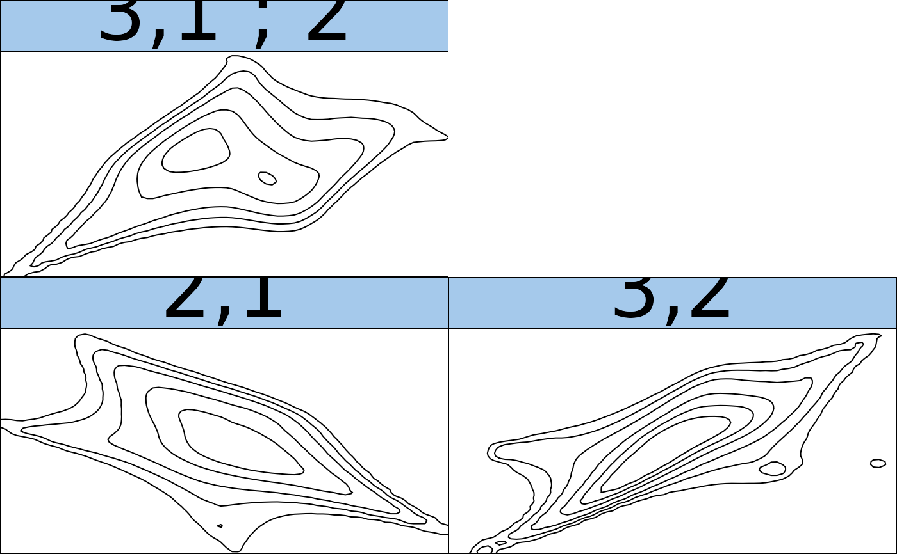

The function estimates a vine copula density using kernel estimators for the pair copulas (based on the kdecopula package).
kdevinecop(
data,
matrix = NA,
method = "TLL2",
renorm.iter = 3L,
mult = 1,
test.level = NA,
trunc.level = NA,
treecrit = "tau",
cores = 1,
info = FALSE
)(\(n x d\)) matrix of copula data (have to lie in \([0,1^d]\)).
R-Vine matrix (\(n x d\)) specifying the structure of the vine;
if NA (default) the structure selection heuristic of Dissman et al.
(2013) is applied.
see kdecop.
see kdecop.
see kdecop.
significance level for independence test. If you provide a
number in \([0, 1]\), an independence test
(BiCopIndTest) will be performed for
each pair; if the null hypothesis of independence cannot be rejected, the
independence copula will be set for this pair. If test.level = NA
(default), no independence test will be performed.
integer; the truncation level. All pair copulas in trees above the truncation level will be set to independence.
criterion for structure selection; defaults to "tau".
integer; if cores > 1, estimation will be parallized
within each tree (using foreach).
logical; if TRUE, additional information about the
estimate will be gathered (see kdecop).
An object of class kdevinecop. That is, a list containing
lists of the estimted pair copulas in each tree,
the structure matrix of the vine,
additional information about the fit (if info = TRUE).
Nagler, T., Czado, C. (2016)
Evading the curse of
dimensionality in nonparametric density estimation with simplified vine
copulas.
Journal of Multivariate Analysis 151, 69-89
(doi:10.1016/j.jmva.2016.07.003)
Nagler, T., Schellhase, C. and Czado, C. (2017)
Nonparametric
estimation of simplified vine copula models: comparison of methods
arXiv:1701.00845
Dissmann, J., Brechmann, E. C., Czado, C., and Kurowicka, D. (2013).
Selecting and estimating regular vine copulae and application to financial
returns.
Computational Statistics & Data Analysis, 59(0):52--69.
data(wdbc, package = "kdecopula")
# rank-transform to copula data (margins are uniform)
u <- VineCopula::pobs(wdbc[, 5:7], ties = "average")
u <- u[1:30, ]
fit <- kdevinecop(u) # estimate density
dkdevinecop(c(0.1, 0.1, 0.1), fit) # evaluate density estimate
#> [1] 9.040116e-17
contour(fit) # contour matrix (Gaussian scale)

pairs(rkdevinecop(500, fit)) # plot simulated data